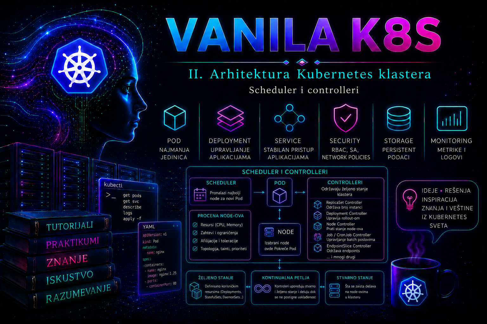

Vanilla Kubernetes

Prethodna lekcija pokazala je da scheduler odlučuje na osnovu deklarisanih requests vrednosti, a ne na osnovu trenutnog utiska da je neki čvor „slobodan”. Ova lekcija dodaje drugi deo odluke: gde je Podu dozvoljeno, poželjno ili zabranjeno da radi, kako se replike raspoređuju između domena otkaza i koji workload dobija prednost kada kapacitet nije dovoljan. Scheduling politika zato nije dekoracija manifesta. Ona povezuje arhitekturu aplikacije sa oznakama čvorova, fizičkim zonama, izolovanim node pool-ovima, tolerancijom prekida i poslovnim prioritetom.
Dobra politika izražava stvarnu nameru sa najmanjim potrebnim brojem ograničenja. Previše strogih pravila može ostaviti Pod u stanju Pending, blokirati rolling update i sprečiti autoscaler da pronađe odgovarajući kapacitet. Previše blagih pravila može sabiti sve replike na isti čvor ili u istu zonu, pustiti običan workload na rezervisane čvorove ili dozvoliti da kritična kontrolna funkcija čeka iza manje važnog posla. Administrator zato najpre definiše failure domain, poverljive oznake, raspoložive resurse i prihvatljivo ponašanje pri nedostatku kapaciteta, a tek zatim piše YAML.
Kako kube-scheduler donosi odluku
Pod bez dodeljenog spec.nodeName ulazi u scheduling red. Scheduler u osnovi prolazi kroz dve ključne etape. U filter etapi uklanja čvorove koji ne ispunjavaju obavezne uslove: raspoložive requests resurse, hard node affinity, netolerisane taint-e, obavezni Pod affinity/anti-affinity, volume ograničenja i druge aktivne plugin kontrole. Preostali čvorovi su feasible nodes. U score etapi rangira dozvoljene čvorove prema preferencijama i politikama, bira najbolji rezultat i preko API servera vezuje Pod za čvor. Ako nijedan čvor nije moguć, Pod ostaje Pending; PostFilter mehanizam može pokušati preemption, ali samo ako bi uklanjanje niže prioritetnih podova stvarno učinilo neki čvor mogućim.
| Kontrola | Osnovna namena | Hard ili soft | Tipična posledica greške |
|---|---|---|---|
nodeSelector / node affinity | Izbor čvorova prema njihovim labelama | Oboje kod affinity-ja | Pod nema nijedan dozvoljeni čvor |
| Pod affinity / anti-affinity | Kolokacija ili razdvajanje prema drugim podovima | Oboje | Deadlock pri rollout-u ili koncentracija replika |
| Topology spread | Kontrolisana ravnomernost po zonama i čvorovima | DoNotSchedule ili ScheduleAnyway | Neravnomerna zaštita ili Pending replike |
| Taints / tolerations | Odbijanje workload-a sa čvorova | Zavisi od efekta | Neželjeni workload na rezervisanom čvoru ili evikcija |
| Priority / preemption | Red čekanja i oslobađanje mesta za važniji Pod | Politika konflikta kapaciteta | Nepotrebni prekidi nižeg prioriteta |
Scheduler prvenstveno raspoređuje novi Pod. Promena labele čvora ili nastanak bolje lokacije ne premešta automatski već pokrenut Pod. Izraz IgnoredDuringExecution upravo upozorava da se pravilo proverava tokom planiranja, ali da Pod obično nastavlja rad ako se labela kasnije promeni. Za kontrolisano rebalansiranje potreban je novi rollout, eksplicitna administrativna intervencija ili pažljivo uveden descheduler; sam scheduler nije kontinuirani optimizator postojećeg smeštaja.
Node labels, nodeSelector i granica poverenja
nodeSelector je najjednostavnije obavezno pravilo: svi navedeni parovi labela moraju postojati na čvoru. Pogodan je kada je kriterijum jednostavan, na primer odobren node pool ili tip diska. nodeName, nasuprot tome, direktno bira ime čvora i zaobilazi uobičajenu scheduler odluku; nije zamena za politiku i uglavnom pripada specijalnim sistemskim ili dijagnostičkim slučajevima. Pod sa ručno postavljenim nodeName može zaobići NoSchedule taint proveru schedulera, mada ga NoExecute i dalje može ukloniti preko kubeleta.
# Read-only: pregled labela i taint-a svih čvorova
kubectl get nodes --show-labels
kubectl get nodes \
-o custom-columns='NAME:.metadata.name,ZONE:.metadata.labels.topology\.kubernetes\.io/zone,POOL:.metadata.labels.workload\.tashizza\.com/pool,TAINTS:.spec.taints'
# State-changing: administratorsko označavanje izabranog laboratorijskog čvora
kubectl label node worker-a workload.tashizza.com/pool=general --overwrite
Labela koja odlučuje o bezbednosnoj ili regulatornoj izolaciji mora imati pouzdano poreklo. Kubelet kompromitovanog čvora ne sme moći sam sebi da dodeli oznaku „PCI”, „FIPS” ili „trusted”. Kada klaster koristi Node authorizer i NodeRestriction admission plugin, organizacione labele sa zaštićenim prefiksom koji sadrži node-restriction.kubernetes.io/ mogu se koristiti za takvu izolaciju. Uvek se proverava konkretna konfiguracija klastera; samo ime labele ne stvara granicu poverenja.
Node affinity – obavezni uslovi i ponderisane preferencije
Node affinity proširuje nodeSelector operatorima In, NotIn, Exists, DoesNotExist, Gt i Lt. requiredDuringSchedulingIgnoredDuringExecution je hard filter: Pod se neće rasporediti ako nijedan čvor ne ispunjava uslov. preferredDuringSchedulingIgnoredDuringExecution dodaje score od 1 do 100 odgovarajućim čvorovima, ali ne zabranjuje ostale. Više nodeSelectorTerms stavki u required delu povezuje se logikom OR, dok se više matchExpressions unutar istog termina povezuje logikom AND.
affinity:
nodeAffinity:
requiredDuringSchedulingIgnoredDuringExecution:
nodeSelectorTerms:
- matchExpressions:
- key: kubernetes.io/os
operator: In
values: [linux]
- key: workload.tashizza.com/pool
operator: In
values: [general]
preferredDuringSchedulingIgnoredDuringExecution:
- weight: 80
preference:
matchExpressions:
- key: storage.tashizza.com/class
operator: In
values: [fast]
Hard pravilo koristi se samo kada workload zaista ne može ili ne sme da radi drugde: arhitektura procesora, uređaj, licencna granica, podatkovni suverenitet ili potvrđena izolacija. Za performansnu prednost, cenu ili „lepši” smeštaj obično je bezbednija soft preferencija. Ako manifest sadrži i nodeSelector i node affinity, čvor mora ispuniti oba skupa uslova.
Inter-Pod affinity i anti-affinity
Pod affinity bira lokaciju prema labelama već raspoređenih podova, a ne prema osobinama samog čvora. Može približiti API i cache u istu zonu radi manje latencije. Pod anti-affinity može razdvojiti replike istog servisa po hostname-u ili zoni radi dostupnosti. Pravilo uključuje selector ciljnih podova, namespace opseg i topologyKey koji određuje domen. Bez odgovarajućih labela na čvorovima domen ne postoji, a bez pažljivo postavljenog namespace opsega pravilo može posmatrati pogrešnu grupu podova.
affinity:
podAntiAffinity:
preferredDuringSchedulingIgnoredDuringExecution:
- weight: 100
podAffinityTerm:
topologyKey: kubernetes.io/hostname
labelSelector:
matchLabels:
app.kubernetes.io/name: checkoutHard anti-affinity po hostname-u garantuje najviše jednu odgovarajuću repliku po čvoru, ali zahteva najmanje onoliko podobnih čvorova koliko postoji replika, uključujući privremenu surge repliku tokom rollout-a. U malom klasteru takvo pravilo često blokira Deployment. Preferirana anti-affinity smanjuje taj rizik, ali ne garantuje razdvajanje. Za ravnomernu raspodelu većeg broja replika topology spread je obično precizniji alat od niza anti-affinity pravila.
Topology spread constraints – ravnoteža između failure domain-a
topologySpreadConstraints broji odgovarajuće podove u topološkim domenima i ograničava razliku, odnosno skew. Domen može biti čvor, zona, region ili organizaciona topologija predstavljena labelom. maxSkew: 1 sa DoNotSchedule zahteva strogu ravnotežu u odnosu na globalni minimum, dok ScheduleAnyway dopušta raspoređivanje i koristi pravilo kao scoring preferenciju. Selector treba da odgovara labelama samog workload-a; u suprotnom nastaju „ghost pods” koji se ne broje kako administrator očekuje.
topologySpreadConstraints:
- maxSkew: 1
topologyKey: topology.kubernetes.io/zone
whenUnsatisfiable: DoNotSchedule
labelSelector:
matchLabels:
app.kubernetes.io/name: checkout
- maxSkew: 1
topologyKey: kubernetes.io/hostname
whenUnsatisfiable: ScheduleAnyway
labelSelector:
matchLabels:
app.kubernetes.io/name: checkout
Polje minDomains ima smisla uz DoNotSchedule i izražava minimalan broj podobnih domena potreban za obračun. Polja nodeAffinityPolicy i nodeTaintsPolicy određuju da li se node affinity i taint/toleration uslovi poštuju pri definisanju podobnih domena; matchLabelKeys može pomoći da se pri rollout-u broje podovi iste revizije, ali selector i rollout semantika moraju biti pažljivo provereni na ciljnoj Kubernetes verziji. Administrator ne dodaje napredna polja samo zato što postoje: najpre testira podrazumevano brojanje na realnoj topologiji.
Scheduler ne zna za zonu koja nema nijedan postojeći čvor. U autoscaled node pool-u skaliranom na nulu takav domen možda neće učestvovati u računu dok node autoscaler ne razume kompletnu infrastrukturu. Takođe, topology spread ne vraća automatski ravnotežu posle scale-down-a ili ručnog brisanja podova. Dostupnost zahteva i dovoljan broj replika, stvarno nezavisne zone, mrežnu i storage arhitekturu koja preživljava kvar domena, kao i PodDisruptionBudget obrađen u kasnijem operativnom kontekstu.
Taints i tolerations – odbijanje, ne privlačenje
Taint se postavlja na Node i odbija podove koji nemaju odgovarajuću toleration. Toleration znači „ovaj Pod sme da podnese taint”; ona ne privlači Pod na taj čvor niti garantuje da će tamo završiti. Za rezervisani GPU, infrastrukturu ili regulisani pool zato se taint obično kombinuje sa node affinity pravilom. Taint čuva neželjene podove napolju, a affinity usmerava odobrene podove unutra.
| Efekat | Novi Pod bez toleration | Već pokrenut Pod | Namena |
|---|---|---|---|
NoSchedule | Ne raspoređuje se | Ne uklanja se samo zbog novog taint-a | Rezervacija ili izolacija čvora |
PreferNoSchedule | Scheduler pokušava da ga izbegne | Ne uklanja se | Soft odvraćanje bez hard blokade |
NoExecute | Ne raspoređuje se | Uklanja se ako nema toleration; može ostati ograničeno vreme uz tolerationSeconds | Kvar, nedostupnost ili vremenski ograničena tolerancija |
# State-changing: dodavanje taint-a na tačno provereni laboratorijski čvor
kubectl taint node worker-a dedicated=platform:NoSchedule
# Read-only: potvrda taint-a
kubectl get node worker-a -o jsonpath='{.spec.taints}'
# State-changing rollback: završni znak minus uklanja baš navedeni taint
kubectl taint node worker-a dedicated=platform:NoSchedule-tolerations:
- key: dedicated
operator: Equal
value: platform
effect: NoSchedule
nodeSelector:
workload.tashizza.com/pool: platform
Operator Equal poredi key i value, dok Exists ne navodi value i toleriše svaki taint sa odgovarajućim key-em i efektom. Prazan key uz Exists ima veoma široko značenje i zahteva naročitu kontrolu. Kubernetes automatski koristi taint-e i tolerations za pojedina node condition stanja, a DaemonSet kontroler dodaje određene tolerations sistemskim daemon podovima. Zato se taint ne uklanja naslepo kada Pod ostane Pending: najpre se utvrđuje ko ga je postavio i koji failure signal predstavlja.
PriorityClass, scheduling red i preemption
PriorityClass je cluster-scoped objekat koji imenu dodeljuje celobrojnu vrednost. Veća vrednost označava viši prioritet. Pod je koristi preko priorityClassName; ako klasa ne postoji, kreiranje poda se odbija. Klasa može imati globalDefault: true, ali u klasteru sme postojati najviše jedna takva klasa, a promena podrazumevanja utiče samo na nove podove. Organizacija treba da ima mali, dokumentovan katalog klasa umesto da svaki tim izmišlja sopstvenu lestvicu.
apiVersion: scheduling.k8s.io/v1
kind: PriorityClass
metadata:
name: business-critical
value: 100000
globalDefault: false
preemptionPolicy: PreemptLowerPriority
description: "Kritični poslovni servisi sa odobrenim pravom preemption-a."
Prioritet utiče na red kojim scheduler obrađuje podove. Kada visokoprioritetni Pod ne može da stane, preemption može nominovati čvor i ukloniti podove nižeg prioriteta, ali samo ako time čvor postaje feasible i sva ostala hard pravila mogu biti ispunjena. Preemption ne popravlja pogrešnu node affinity, netolerisan taint, nedostupan volume, nemoguć topology spread ili zahtev veći od kapaciteta svakog čvora. preemptionPolicy: Never zadržava viši položaj u scheduling redu, ali zabranjuje tom Podu da preemptuje druge podove.
Preemption pokušava da izabere prihvatljiv skup žrtava nižeg prioriteta i nastoji da poštuje PodDisruptionBudget, ali PDB nije apsolutna zabrana preemption-a. Žrtve dobijaju svoj graceful termination period, pa preemptor ne mora odmah početi da radi; u međuvremenu drugi viši prioritet može zauzeti mesto. QoS i PriorityClass su odvojene ose: Guaranteed Pod nije automatski višeg prioriteta, a BestEffort Pod može biti pogrešno označen visokom klasom. Visok prioritet ne stvara CPU ili memoriju i ne sme služiti kao zamena za requests, kapacitet i HA dizajn.
Kombinovanje politika bez kontradikcija
Filter pravila se u praksi seku: čvor mora imati dovoljno resursa, zadovoljiti hard affinity, biti u dozvoljenom topology računu, imati sve potrebne volume uslove i ne sme imati netolerisan hard taint. Svako novo hard pravilo smanjuje skup kandidata. Zato se politika projektuje kao matrica, sa jasnim vlasnikom svake labele i odgovorom šta se dešava kada zona, pool ili uređaj nisu dostupni.
- Kritičan servis u više zona: hard node affinity ka odobrenom pool-u, hard zone spread ako postoje najmanje potrebni domeni, soft hostname spread, realni requests i dovoljan broj replika.
- Rezervisani platform node pool:
NoScheduletaint odbija ostale podove; platform pod dobija usku toleration i obaveznu node affinity ka pool-u. - Latency-sensitive par servisa: soft Pod affinity u istoj zoni, ne nužno na istom čvoru; meri se dobitak naspram rizika zajedničkog failure domain-a.
- Batch posao: niži prioritet i po mogućnosti
preemptionPolicy: Never; ne dobija nekritički toleration za rezervisane čvorove.
Validacija i troubleshooting Pending podova
Dijagnostika počinje dokazima, ne uklanjanjem pravila. Beleže se kontekst, vreme, PodSpec, events, stanje i labele čvorova, taint-i, allocatable resursi, requests postojećih podova i poslednja izmena Deployment-a. Poruka schedulera često sabira više razloga, na primer nedovoljan CPU, netolerisan taint i nepodudarnu affinity. Broj čvorova po razlogu nije nužno skup koji se može prosto sabrati, jer jedan čvor može pasti na više filtera.
# Sve naredne komande su read-only
kubectl config current-context
kubectl get pod -n scheduling-lab -o wide
kubectl describe pod -n scheduling-lab POD_NAME
kubectl get events -n scheduling-lab \
--field-selector involvedObject.kind=Pod,involvedObject.name=POD_NAME \
--sort-by=.metadata.creationTimestamp
kubectl get pod -n scheduling-lab POD_NAME -o yaml
kubectl get nodes --show-labels
kubectl describe nodes
kubectl get priorityclass
kubectl get pod -n scheduling-lab POD_NAME \
-o jsonpath='{.spec.priorityClassName}{"\n"}{.status.nominatedNodeName}{"\n"}'| Simptom / event | Neposredni uzrok | Potvrda | Trajna korekcija |
|---|---|---|---|
didn't match Pod's node affinity | Nijedan ili premalo čvorova ima traženu labelu | Uporediti aktivni PodSpec i --show-labels | Ispraviti label inventory ili ublažiti samo neopravdano hard pravilo |
untolerated taint | Pod nema preciznu toleration | Pregled .spec.taints i .spec.tolerations | Dodati toleration samo ako workload sme na pool; inače obezbediti drugi čvor |
topology spread constraint | Skew ili broj domena ne dopušta novu repliku | Prebrojati matching podove po topology labeli | Obezbediti domen/kapacitet ili odobreno promeniti maxSkew/whenUnsatisfiable |
pod anti-affinity rules | Sve dozvoljene topologije već imaju matching Pod | Proveriti selector, namespace i topologyKey | Dodati čvor ili koristiti soft pravilo ako poslovna namera to dopušta |
Preemption is not helpful | Uklanjanje nižih prioriteta ne rešava hard uslov | Razdvojiti resurse od affinity, taint i volume uzroka | Popraviti stvarni uslov; ne povećavati prioritet naslepo |
Scheduler logovi zavise od načina instalacije kontrolne ravni. U kubeadm klasteru scheduler je tipično static Pod u kube-system namespace-u, pa se proverava komandom kubectl logs -n kube-system KUBE_SCHEDULER_POD, uz odgovarajuća administratorska prava. U managed servisu ti logovi možda nisu direktno dostupni; tada se koriste događaji, control-plane logging usluga i podrška dobavljača. Vremenski prozor mora obuhvatiti nastanak Pending poda i poslednju promenu. Povećanje verbosity nivoa schedulera je promena kontrolne ravni i ne radi se kao prva dijagnostička mera.
Integrisani praktikum – dostupna aplikacija i rezervisani node pool
Cilj i kontekst. Tim uvodi tri replike servisa checkout. Replike treba rasporediti po čvorovima, a kada laboratorija ima zone i po zonama. Jedan čvor se privremeno rezerviše za platform workload pomoću taint-a. Zatim se namerno izazivaju Pending i preemption scenariji, prikupljaju dokazi i stanje vraća u početni oblik.
Topologija i preduslovi. Potreban je testni klaster sa najmanje dva schedulable worker čvora; za puni zone scenario najmanje dva čvora moraju imati smislene topology.kubernetes.io/zone labele. Potrebni su kubectl, ovlašćenje za namespace workload-e, kao i posebno odobrena cluster prava za Node labele/taint-e i PriorityClass. U deljenom ili produkcionom klasteru ne menjaju se Node objekti za ovu vežbu. Preporučeni su kind, minikube ili namenski staging klaster.
Rizik. Taint i pogrešna labela mogu blokirati druge workload-e; PriorityClass može izazvati prekid podova. Pre svake state-changing komande zapisuje se izabrani čvor i postojeća vrednost. Koriste se samo objekti sa prefiksom scheduling-lab, mali requests i namenski namespace. Preemption test se izvodi samo u izolovanoj laboratoriji.
-
Inventar i početno stanje.
Validacija: evidentirati najmanje dva worker čvora, zone i postojeće taint-e. Ako nema dovoljne topologije, zone constraint iz narednog manifesta uklanja se ili koristi samo kao objašnjena varijanta; ne izmišljaju se zone koje ne predstavljaju stvarne domene otkaza.kubectl config current-context kubectl auth can-i create namespaces kubectl auth can-i patch nodes kubectl auth can-i create priorityclasses.scheduling.k8s.io kubectl get nodes -o wide kubectl get nodes -L topology.kubernetes.io/zone,kubernetes.io/hostname kubectl get nodes -o jsonpath='{range .items[*]}{.metadata.name}{"\t"}{.spec.taints}{"\n"}{end}' -
Kreiranje namespace-a i bezbednih laboratorijskih labela. Izabrati dva ili više worker čvorova i zameniti imena u komandama.
Očekivani rezultat: izabrani čvorovi imaju pool labelu. Ako je labela ranije postojala sa drugom vrednošću, stara vrednost mora biti sačuvana za rollback.kubectl create namespace scheduling-lab kubectl label node WORKER_A workload.tashizza.com/pool=general --overwrite kubectl label node WORKER_B workload.tashizza.com/pool=general --overwrite kubectl get nodes -l workload.tashizza.com/pool=general -
Primena osnovne scheduling politike.
Manifest sačuvati kaoapiVersion: apps/v1 kind: Deployment metadata: name: checkout namespace: scheduling-lab spec: replicas: 3 strategy: rollingUpdate: maxUnavailable: 0 maxSurge: 1 selector: matchLabels: app.kubernetes.io/name: checkout template: metadata: labels: app.kubernetes.io/name: checkout spec: affinity: nodeAffinity: requiredDuringSchedulingIgnoredDuringExecution: nodeSelectorTerms: - matchExpressions: - key: workload.tashizza.com/pool operator: In values: [general] podAntiAffinity: preferredDuringSchedulingIgnoredDuringExecution: - weight: 100 podAffinityTerm: topologyKey: kubernetes.io/hostname labelSelector: matchLabels: app.kubernetes.io/name: checkout topologySpreadConstraints: - maxSkew: 1 topologyKey: kubernetes.io/hostname whenUnsatisfiable: ScheduleAnyway labelSelector: matchLabels: app.kubernetes.io/name: checkout containers: - name: web image: nginx:1.27-alpine resources: requests: cpu: 25m memory: 32Mi limits: cpu: 200m memory: 128Mi readinessProbe: httpGet: path: / port: 80 initialDelaySeconds: 2 periodSeconds: 5checkout.yaml, pa primeniti i proveriti:
Validacija: sva tri poda sukubectl apply -f checkout.yaml kubectl rollout status deployment/checkout -n scheduling-lab --timeout=180s kubectl get pods -n scheduling-lab -o wide kubectl get pods -n scheduling-lab \ -l app.kubernetes.io/name=checkout \ -o custom-columns='POD:.metadata.name,NODE:.spec.nodeName,PHASE:.status.phase'Running/Ready, rade samo na čvorovima sa pool labelom i scheduler je, kada kapacitet dopušta, smanjio koncentraciju po hostname-u. -
Dodavanje zone spread varijante. Ovaj korak se radi samo ako najmanje dve stvarne zone imaju podobne čvorove. U
topologySpreadConstraintsdodati hard zone pravilo ispred hostname pravila:- maxSkew: 1 minDomains: 2 topologyKey: topology.kubernetes.io/zone whenUnsatisfiable: DoNotSchedule labelSelector: matchLabels: app.kubernetes.io/name: checkout
Napomena: poslednja kolona čita Pod labelu, a Pod je obično nema; za dokaz zone treba povezatikubectl diff -f checkout.yaml kubectl apply -f checkout.yaml kubectl rollout status deployment/checkout -n scheduling-lab --timeout=180s kubectl get pods -n scheduling-lab \ -o custom-columns='POD:.metadata.name,NODE:.spec.nodeName,ZONE:.metadata.labels.topology\.kubernetes\.io/zone'spec.nodeNamesa Node inventarom. To je namerna kontrolna tačka protiv pogrešnog tumačenja izlaza. Validacija se završava poređenjem sakubectl get nodes -L topology.kubernetes.io/zone. -
Taint i uska toleration. Izabrati jedan general worker koji je bezbedno privremeno rezervisati.
Očekivanje: postojeći checkout pod na tom čvoru nije eviktovan samo zbogkubectl taint node WORKER_A dedicated=platform:NoSchedule kubectl get node WORKER_A -o jsonpath='{.spec.taints}{"\n"}' kubectl rollout restart deployment/checkout -n scheduling-lab kubectl rollout status deployment/checkout -n scheduling-lab --timeout=180s kubectl get pods -n scheduling-lab -o wide kubectl get events -n scheduling-lab --sort-by=.metadata.creationTimestampNoSchedule, ali novi checkout podovi bez toleration ne mogu biti planirani na njega. Ako preostali kapacitet i hard pravila nisu dovoljni, rollout može ostati blokiran. To je očekivan dokaz, ne razlog za nasumično uklanjanje kontrola. -
Platform Pod sa toleration i affinity.
Posle zameneapiVersion: v1 kind: Pod metadata: name: platform-agent namespace: scheduling-lab labels: app.kubernetes.io/name: platform-agent spec: nodeSelector: kubernetes.io/hostname: WORKER_A tolerations: - key: dedicated operator: Equal value: platform effect: NoSchedule containers: - name: agent image: registry.k8s.io/pause:3.10 resources: requests: cpu: 10m memory: 16Mi limits: cpu: 50m memory: 32MiWORKER_A, sačuvati kaoplatform-agent.yaml.
Validacija: Pod radi baš na rezervisanom čvoru. Toleration sama ne bi bila dovoljna za taj dokaz;kubectl apply -f platform-agent.yaml kubectl wait -n scheduling-lab --for=condition=Ready pod/platform-agent --timeout=120s kubectl get pod platform-agent -n scheduling-lab -o widenodeSelectorobezbeđuje privlačenje. -
Kontrolisani Pending incident. Povećati checkout replike na broj veći od onoga što hard anti-affinity ili dostupni domeni mogu podržati samo ako ste prethodno prebacili hostname anti-affinity u required varijantu u laboratorijskoj kopiji.
Troubleshooting grana: ako nema Pending poda, ne zaključivati da hard pravilo ne radi; klaster možda ima dovoljno podobnih domena. Ako postoji, zabeležiti tačan FailedScheduling razlog. Trajna mera je usklađivanje broja replika, rollout surge-a i broja domena. Privremeno uklanjanje HA pravila dopušteno je samo uz odobren rizik.kubectl scale deployment/checkout -n scheduling-lab --replicas=5 kubectl get pods -n scheduling-lab -o wide PENDING_POD=$(kubectl get pods -n scheduling-lab \ --field-selector=status.phase=Pending \ -o jsonpath='{.items[0].metadata.name}') kubectl describe pod -n scheduling-lab "$PENDING_POD" kubectl get events -n scheduling-lab \ --field-selector involvedObject.name="$PENDING_POD" \ --sort-by=.metadata.creationTimestamp -
PriorityClass bez preemption-a.
Sačuvati kaoapiVersion: scheduling.k8s.io/v1 kind: PriorityClass metadata: name: scheduling-lab-high value: 1000 globalDefault: false preemptionPolicy: Never description: "Laboratorijska viša pozicija u redu bez prava preemption-a."priorityclass.yamli primeniti samo u izolovanom klasteru:
Validacija: novi podovi dobijaju vrednost 1000 i klasu, ali ne uklanjaju druge podove. Pun preemption test zahteva namenski kapacitet zasićen niže prioritetnim laboratorijskim podovima; ne izvodi se na deljenom klasteru.kubectl apply -f priorityclass.yaml kubectl get priorityclass scheduling-lab-high -o yaml kubectl patch deployment checkout -n scheduling-lab --type=merge \ -p '{"spec":{"template":{"spec":{"priorityClassName":"scheduling-lab-high"}}}}' kubectl get pods -n scheduling-lab \ -o custom-columns='POD:.metadata.name,PRIORITY:.spec.priority,CLASS:.spec.priorityClassName,NOMINATED:.status.nominatedNodeName' -
Rollback i cleanup. Najpre vratiti Deployment na tri replike i potvrditi stabilnost, zatim ukloniti taint i laboratorijske labele. Ako su labele ranije postojale, vratiti njihove sačuvane vrednosti umesto brisanja.
Destruktivna operacija: brisanje namespace-a uklanja sve njegove objekte. Pre izvršenja potvrditi da je to namenski laboratorijski namespace. PriorityClass je cluster-scoped i mora se ukloniti zasebno. Završna validacija proverava da nema namespace-a, klase, taint-a ni zaostale laboratorijske labele.kubectl scale deployment/checkout -n scheduling-lab --replicas=3 kubectl rollout status deployment/checkout -n scheduling-lab --timeout=180s kubectl taint node WORKER_A dedicated=platform:NoSchedule- kubectl label node WORKER_A workload.tashizza.com/pool- kubectl label node WORKER_B workload.tashizza.com/pool- kubectl delete namespace scheduling-lab kubectl wait --for=delete namespace/scheduling-lab --timeout=180s kubectl delete priorityclass scheduling-lab-high
Kriterijumi prihvatanja praktikuma
- Administrator razlikuje filter i score uslove i iz events poruke identifikuje konkretan neuspešan filter.
- Checkout podovi rade isključivo u označenom general pool-u i raspoređeni su po hostname domenima koliko topologija dopušta.
- Zone spread primenjen je samo kada zone predstavljaju stvarne domene otkaza.
NoScheduletaint sprečava nove netolerantne podove, ali ne eviktuje postojeće.- Platform agent radi na rezervisanom čvoru zahvaljujući kombinaciji toleration i node selection pravila.
- Pending incident je objašnjen događajima, PodSpec-om i Node inventarom pre bilo kakve korekcije.
- PriorityClass sa
preemptionPolicy: Neverpovećava redni prioritet bez prekidanja drugih podova. - Rollback uklanja sve laboratorijske cluster-scoped i namespace-scoped promene i vraća prethodne Node vrednosti.
Administratorske prakse
Upravljanje Node labelama kao infrastrukturnim podacima. Dozvoljeni ključevi, vlasnik, izvor vrednosti i bezbednosni nivo dokumentuju se u CMDB-u i infrastrukturnom repozitorijumu. Najmanje posle promene node pool-a i kvartalno porede se cloud/virtualization inventar i Kubernetes Node objekti. Neočekivana labela na bezbednosnoj granici tretira se kao incident konfiguracije; ne „popravlja” se workload manifest da bi prihvatio nepouzdanu vrednost.
Revizija hard ograničenja. Pre svakog povećanja replika, promene maxSurge ili gašenja zone računa se koliko podobnih domena ostaje. Hard anti-affinity i DoNotSchedule pravila testiraju se sa najgorim planiranim failure scenarijem. Uspeh znači da minimalan broj dostupnih replika može biti održan i tokom rollout-a, bez ručnog kršenja politike.
Taint katalog i kontrola tolerations. Svaki organizacioni taint ima vlasnika, namenu, odobrene workload-e i postupak uklanjanja. Široke Exists tolerations periodično se traže admission proverom ili policy alatom. Alarm se podiže kada običan workload dobije toleration za control-plane, critical ili dedicated pool bez odobrenja.
PriorityClass kao ograničena privilegija. Kreiranje klasa i korišćenje najviših klasa kontroliše se RBAC/admission politikom. Posle svake preemption serije korelišu se scheduler events, vlasnici žrtava, PDB stanje, graceful termination i vreme do Ready stanja preemptora. Ako preemption postane uobičajen način rada, osnovni uzrok je najčešće nedovoljan kapacitet ili loša politika prioriteta.
Monitoring scheduling SLO-a. Prate se scheduler pending queue, scheduling attempts, scheduling latency, FailedScheduling events, broj Pending podova po razlogu i preemption događaji. Alarm mora razlikovati kratkotrajan red tokom normalnog rollout-a od trajnog neuspeha. Nalaz se povezuje sa promenama Deployment-a, node autoscaler događajima, requests vrednostima i dostupnošću zona.
Promene kroz verzionisan izvor istine. Affinity, topology spread, tolerations i PriorityClass manifesti prolaze API schema validaciju, policy testove i staging rollout. Emergency patch se odmah beleži i vraća u Git izvor kako sledeće usaglašavanje ne bi poništilo korekciju. Node taint/label promene imaju change zapis sa tačnim ciljem i rollback vrednošću.
Završna kontrolna tačka
- Potvrđeni su aktivni kontekst, ovlašćenja i vlasništvo nad Node labelama i taint-ima.
- Za svaki hard uslov postoji dokumentovan poslovni ili tehnički razlog.
- Broj podobnih čvorova i domena dovoljan je za replike, failure scenario i rollout surge.
- Topology selector odgovara labelama samih podova koji treba da se broje.
- Toleration je uska i, kada je potreban dedicated placement, uparena je sa node affinity pravilom.
- PriorityClass postoji, ima odobrenu vrednost i poznatu
preemptionPolicy. - Requests vrednosti omogućavaju realnu proveru kapaciteta; prioritet se ne koristi kao zamena za kapacitet.
- Nema neobjašnjenih Pending, nominated ili preempted podova.
- Events i, kada su dostupni, scheduler logovi pokrivaju vremenski prozor promene.
- Stanje je funkcionalno provereno posle rollout-a i posle simuliranog gubitka dozvoljenog domena.
- Manifest, rizik, odobrenje, rezultat i rollback nalaze se u change zapisu i Git repozitorijumu.
Zaključak
Kubernetes scheduling politika je skup različitih, međusobno povezanih kontrola. Node affinity bira čvorove prema njihovim osobinama; Pod affinity i anti-affinity izražavaju odnos prema drugim podovima; topology spread kontroliše raspodelu po failure domenima; taints odbijaju neodobrene workload-e, dok tolerations samo uklanjaju to odbijanje; PriorityClass uređuje red i može dozvoliti preemption nižeg prioriteta. Nijedna pojedinačna kontrola ne garantuje dostupnost, izolaciju ili performanse bez odgovarajućih resursa, replika, infrastrukture i operativne validacije.
Nakon ove lekcije administrator treba da ume da prevede poslovnu nameru u minimalan skup hard i soft pravila, proveri label trust, izračuna broj topoloških domena, rezerviše node pool kombinacijom taint-a i affinity-ja, uvede kontrolisane klase prioriteta i objasni zašto preemption jeste ili nije koristan. Najvažnija praktična veština ostaje dokazivanje uzroka Pending stanja pre promene: PodSpec, events, Node labele, taint-i, requests, volume uslovi i scheduler tragovi moraju dati istu priču.
Odgovorna politika ostavlja bezbedan izlaz. Svako hard ograničenje ima plan za gubitak domena, svaki taint ima vlasnika i rollback, svaka visoka klasa prioriteta ima ograničeno pravo korišćenja, a svaka izmena prolazi rollout i recovery proveru. Time se scheduling pretvara iz skupa YAML polja u upravljiv mehanizam dostupnosti, izolacije i kapaciteta.